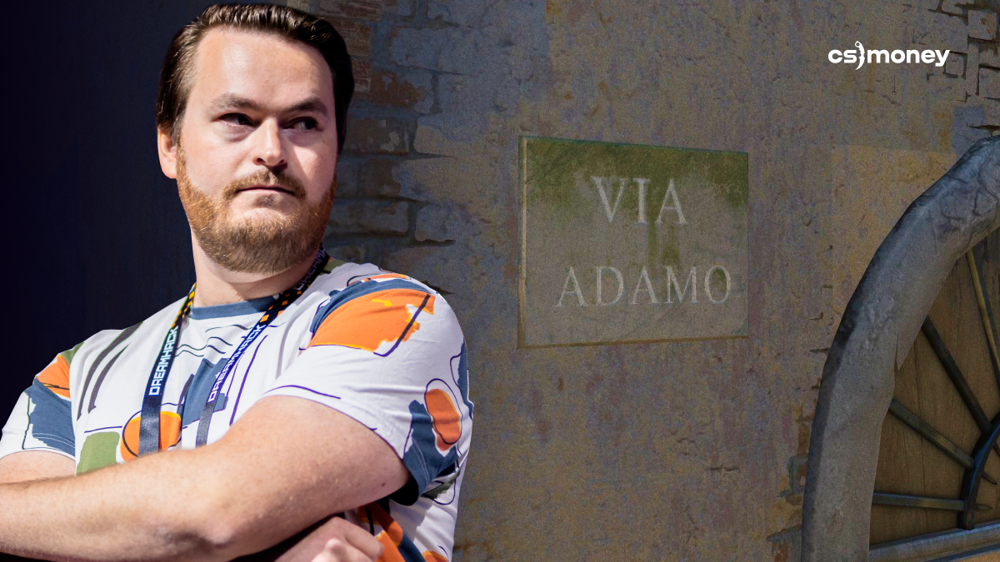

Friberg | The Banana King
Did you know that Banana on Inferno is actually called Via Adamo, Adam Street? All CS:GO fans know exactly who this is referring to. In CS:GO’s early days, when NiP dominated for several years, Friberg played super effectively on the specific part of the map.
Friberg was showcasing his excellent Banana skills all the time, but the main highlight was the round in the ESL One Cologne 2014 Grand Finals. Armed with an AK-47 Redline, Adam single-handedly cleared the entire Fnatic team, and three frags were made right on Banana. Given that Inferno was the deciding map, which NiP ultimately won, the significance of this moment is hard to overestimate.